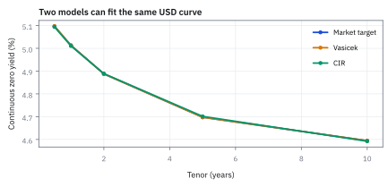
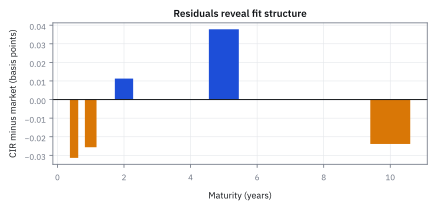
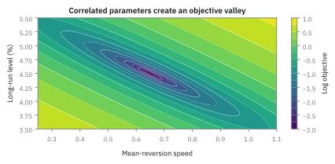
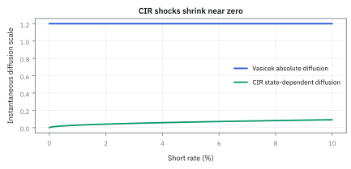

20.5 Calibrating Vasicek and Cox-Ingersoll-Ross (CIR)
พารามิเตอร์ของ Vasicek และ CIR หาได้จากการทำให้ราคาพันธบัตรของแบบจำลองใกล้ quote ของตลาดที่สุด แต่ curve บอกระดับและความเร็วดึงกลับได้ บอกความผันผวนแทบไม่ได้
ทีมให้ Vasicek fit กับ LIBOR ห้าอายุและ swap เจ็ดอายุของตลาดดอลลาร์วันที่ 14 ธันวาคม 2017 โดยปล่อยพารามิเตอร์ทั้งสี่ตัวอิสระ optimizer ตอบว่าความผันผวนของ short rate คือ $\sigma_V=9.52\%$ ต่อปี ทั้งที่ short rate วันนั้นอยู่แถว 1.45% เพื่อนบอกว่าตลาดกำลังบอกว่าอัตราจะแกว่งแรง ควรขาย cap แพงขึ้น ถูกไหม?
ลองตอบก่อนเปิดเฉลย
ไม่ถูก curve แทบไม่รู้จัก $\sigma_V$ ตรึง $\sigma_V$ ที่ 0, 1% และ 2% แล้ว fit ตัวอื่นใหม่ ได้คะแนนความคลาด (SSRE) 0.013680, 0.013671 และ 0.013643 ต่างกันไม่ถึง 0.3% ที่ 9.52% ได้ 0.012667 ดีขึ้นแค่ 7.3% optimizer ใช้ $\sigma_V$ เป็นตัวดัด curve เพิ่มอีกหนึ่งตัว ไม่ใช่ข่าวเรื่องความผันผวน ความผันผวนต้อง calibrate กับราคา option แบบ 20.4
สิ่งที่เราจะสร้าง
13.4 แก้สมการของ Vasicek และ CIR และ 13.7 ใช้ Feynman–Kac ตั้งราคาพันธบัตรของ Vasicek หน้านี้ถามคำถามที่ตามมาทันที: พารามิเตอร์มาจากไหน ต้นไม้ของ 20.3 ปรับระดับทุกชั้นจึง fit curve ได้พอดี แบบจำลองสองตัวนี้มีพารามิเตอร์แค่สี่ตัว ($\kappa,\theta,\sigma,r_0$) จึงต้องเลือกค่าที่ทำให้ราคาของแบบจำลองใกล้ตลาดที่สุด และต้องบอกให้ชัดว่า “ใกล้” วัดด้วยอะไร
ลำดับคือ พารามิเตอร์แต่ละตัวทำอะไร สูตรราคาพันธบัตร ความผันผวนของราคาพันธบัตร objective ที่ใช้วัด ทดสอบระบบด้วย curve ที่รู้คำตอบ ลอง CIR บน curve เดียวกัน แล้ว calibrate กับ LIBOR และ swap จริงสองวัน และดูว่าทำไมความผันผวนหาจาก curve ไม่ได้
ศัพท์ที่ใช้ในหัวข้อนี้
- Vasicek และ CIR
- แบบจำลอง short rate ที่ดึงอัตรากลับหาระดับยาวด้วยความเร็วคงที่ Vasicek มีแรงสุ่มขนาดคงที่ อัตราจึงติดลบได้ CIR คูณแรงสุ่มด้วย $\sqrt{r}$ แรงสุ่มจึงหายไปใกล้ศูนย์ ทั้งคู่มีสูตรปิดของราคาพันธบัตร
- Calibration
- การเลือกพารามิเตอร์ให้ราคาของแบบจำลองใกล้ราคาตลาดตาม objective ที่ประกาศไว้ ทำใหม่ทุกวัน ก่อนใช้แบบจำลองตั้งราคาของอื่น
- Objective และ residual
- residual คือค่าของแบบจำลองลบค่าตลาดของ quote หนึ่งตัว objective คือผลรวมกำลังสองของ residual ที่ถ่วงน้ำหนักแล้ว optimizer ทำให้มันต่ำที่สุด หน่วยของ residual (ราคา, bp หรือสัดส่วน) เปลี่ยนคำตอบได้
- SSRE
- ผลรวมกำลังสองของความคลาดแบบสัดส่วน (ค่าแบบจำลองหารค่าตลาดลบหนึ่ง) ใช้ให้ quote ระดับ 1.5% กับ 3% ที่พลาดเป็นสัดส่วนเท่ากันได้คะแนนเท่ากัน
- Identifiability
- ข้อมูลแยกพารามิเตอร์ชุดหนึ่งออกจากอีกชุดได้แค่ไหน ถ้าหลายชุดให้ราคาเกือบเท่ากัน ค่าที่ optimizer ตอบก็แค่เป็นหนึ่งในหลายคำตอบ ไม่ใช่ข้อมูล
- Feller condition
- เงื่อนไข $2\kappa\theta\ge\sigma_C^2$ ของ CIR ที่ทำให้อัตราไม่แตะศูนย์ (13.4 ขั้นที่ 10) ใช้ตรวจชุดพารามิเตอร์ที่ fit ได้
สัญลักษณ์และหน่วย
| สัญลักษณ์ | ความหมาย | หน่วย |
|---|---|---|
| $r_t,\ r_0$ | short rate และค่าวันนี้ | ต่อปี |
| $\kappa,\ \theta$ | ความเร็วดึงกลับ และระดับยาว (ใต้ $\mathbb Q$) | ต่อปี, ต่อปี |
| $\sigma_V,\ \sigma_C$ | ความผันผวนของ Vasicek และตัวคูณของ CIR | ต่อ √ปี, √(ต่อปี) ต่อ √ปี |
| $P(0,T),\ A,\ B$ | ราคาพันธบัตร $=Ae^{-Br_0}$ และสองฟังก์ชันของอายุ | \$ ต่อ \$, ไม่มีหน่วย, ปี |
| $y(T)$ | zero yield ทบต่อเนื่อง $=-\ln P(0,T)/T$ | ต่อปี |
| $L(T),\ s(T)$ | LIBOR แบบ simple และ swap rate ครึ่งปี จากราคาของแบบจำลอง | ต่อปี |
| $J,\ \mathrm{SSRE}$ | objective ใน bp กำลังสอง และผลรวมกำลังสองของความคลาดแบบสัดส่วน | bp², ไม่มีหน่วย |
ขั้นที่ 1 — สองแบบจำลอง และพารามิเตอร์แต่ละตัวทำอะไร
ก่อน calibrate ต้องรู้ว่ากำลังหมุนปุ่มอะไร สองสมการแรกเป็นนิยามของแบบจำลองที่ 13.4 แก้ไว้แล้ว สองแถวถัดมาคือผลของ 13.4 ขั้นที่ 2 และ 7: ค่าเฉลี่ยเดินเข้าหา $\theta$ แบบ exponential และระยะห่างหายครึ่งหนึ่งใน $\ln2/\kappa$ ใส่ตัวเลขของตัวอย่างสังเคราะห์ของหน้านี้: $\kappa=0.65$ $\theta=4.5\%$ $\sigma_V=1.2\%$ $r_0=5.2\%$
$\kappa$ บอกว่าดึงกลับเร็วแค่ไหน $\theta$ บอกว่าดึงไปหาอะไร $\sigma$ บอกว่าแกว่งแค่ไหน และ $r_0$ คือจุดเริ่ม ระยะห่าง 0.7 จุดจาก 5.2% หายครึ่งหนึ่งใน 1.0664 ปี ไม่ใช่ $1/\kappa=1.5385$ ปี ($1/\kappa$ คือเวลาที่เหลือ $1/e$ หรือ 36.8%) ความผันผวนไม่โตไม่หยุด แต่ตันที่ SD 1.0525%
ทั้งหมดนี้อยู่ใต้ $\mathbb Q$ ของการตั้งราคา ค่าที่ fit จากราคาตลาดจึงรวมค่าชดเชยความเสี่ยงไว้แล้ว ไม่ใช่คำทำนายว่าอัตราจริงจะเดินอย่างไร
Figure 20.5a — ค่าเฉลี่ยของ short rate เดินกลับหา 4.5%

แกนนอนคือเวลา 0 ถึง 10 ปี (160 จุด) แกนตั้งคือ $\theta+(r_0-\theta)e^{-\kappa t}$ เป็นเปอร์เซ็นต์ ที่ $\kappa=0.65$ และ $\theta=4.5\%$ สามเส้นเริ่มที่ 2%, 5.2% และ 8% เส้นบนกับเส้นล่างเข้าหา 4.5% ด้วยจังหวะเดียวกัน เพราะความเร็วกำหนดโดย $\kappa$ อย่างเดียว ไม่ขึ้นกับจุดเริ่มหรือ $\sigma$ ภาพเป็นค่าเฉลี่ย ไม่ใช่เส้นทางที่สุ่ม
ขั้นที่ 2 — สูตรราคาพันธบัตร: เดารูปแล้วแทนลง PDE ของ 13.7
calibrate ต้องคิดราคาพันธบัตรหลายพันครั้ง จึงต้องมีสูตรปิด 13.7 ขั้นที่ 9 ให้ PDE ของราคา $f(\tau,r)$ ที่เหลืออายุ $\tau$ ลองรูป $f=e^{a(\tau)-B(\tau)r}$ ซึ่งเป็นจริงที่วันครบกำหนดถ้า $a(0)=B(0)=0$ แทนลง PDE หารด้วย $f$ แล้วเทียบพจน์ที่คูณ $r$ กับพจน์ที่ไม่มี $r$
พจน์ที่คูณ $r$: $B'+\kappa B-1=0$ พจน์ที่ไม่มี $r$: $-a'-\kappa\theta B+\tfrac12\sigma_V^2B^2=0$ สมการของ $B$ เป็นเชิงเส้นอันดับหนึ่ง คูณ integrating factor $e^{\kappa\tau}$ แบบ 13.4 ขั้นที่ 3 แล้วอินทิเกรตจาก 0 ได้แถวสุดท้าย $B$ คือความไวของ log ราคาต่อ $r$ และตันที่ $1/\kappa$ ไม่โตตามอายุ
อินทิเกรต $a'$ ได้ $\ln A=(\theta-\tfrac{\sigma_V^2}{2\kappa^2})(B-\tau)-\tfrac{\sigma_V^2B^2}{4\kappa}$ ตรวจได้ด้วยการดิฟกลับ ของ CIR แรงสุ่มกำลังสองคือ $\sigma_C^2r$ จึงได้ $B'=1-\kappa B-\tfrac12\sigma_C^2B^2$ และ $a'=-\kappa\theta B$ คำตอบคือ $B_C=2(e^{\gamma\tau}-1)/[(\gamma+\kappa)(e^{\gamma\tau}-1)+2\gamma]$ เมื่อ $\gamma=\sqrt{\kappa^2+2\sigma_C^2}$ และ $A_C$ ในโค้ด ซึ่งโค้ดตรวจว่าเข้าสมการ
ขั้นที่ 3 — ราคาพันธบัตรแกว่งแค่ไหน: $\sigma_VB$
สูตรปิดบอกราคาวันนี้ ถ้าจะ hedge ต้องรู้ว่าราคาแกว่งแค่ไหน ใช้ Itô กับ $P(t,r_t)$ แล้วให้ PDE ของขั้นที่ 2 ทำงาน: พจน์ $dt$ ทั้งก้อนคือด้านซ้ายของ PDE ซึ่งเท่ากับ $rP$ พอดี และ $P_r=-BP$
ใต้ $\mathbb Q$ พันธบัตรทุกอายุโตเฉลี่ยด้วย $r_t$ เท่ากัน ต่างกันแค่ความผันผวน $\sigma_VB$ พันธบัตรยาวแกว่งมากกว่า แต่ $B$ ตันที่ $1/\kappa=1.5385$ ความผันผวนจึงไม่เกิน 1.85% ต่อปีไม่ว่าอายุจะยาวแค่ไหน ต่างจาก duration ของ 18.2 ที่โตตามอายุ เพราะแรงดึงกลับทำให้ shock วันนี้จางก่อนถึงเงินก้อนไกล
ขั้นที่ 4 — objective: “ใกล้” วัดด้วยอะไร
calibration ไม่ใช่การมองกราฟแล้วเดา สูตรทำงานห้าขั้น: เลือกข้อมูล เลือกแบบจำลอง เลือก objective เลือกจุดเริ่ม แล้วเลือก optimizer ขั้นที่สามสำคัญที่สุด เพราะมันคือคำถามที่ optimizer ตอบ ตัวอย่างนี้วัดความคลาดของ yield เป็น bp ยกกำลังสอง ให้น้ำหนักเท่ากัน ลองให้คะแนนสามชุด residual ด้วยมือ
ยกกำลังสองทำให้เครื่องหมายต่างกันไม่หักล้างกัน ชุดที่สองดีกว่าชุดแรก แต่ชุดที่สามซึ่งตรงพอดีสองจุดกลับแย่กว่า เพราะจุดเดียวที่พลาด 4 bp ได้โทษ 16 optimizer จึงต้องดูทุกอายุพร้อมกัน ส่วน $w_i$ ใช้ถ่วงตามความน่าเชื่อถือของ quote เช่น bid–ask แคบได้น้ำหนักมาก
ถ้าวัดเป็นราคาแทน yield พันธบัตรยาวจะครองคะแนน ถ้าวัดแบบสัดส่วน quote ต่ำและสูงได้น้ำหนักเท่ากัน ต้องบันทึกกติกานี้คู่กับพารามิเตอร์เสมอ
ขั้นที่ 5 — ทดสอบระบบด้วย curve ที่รู้คำตอบ
โจทย์ให้อะไรมาบ้าง: สร้าง yield ห้าอายุ 0.5, 1, 2, 5 และ 10 ปีจาก Vasicek ที่ $\kappa=0.65$ $\theta=4.5\%$ $\sigma_V=1.2\%$ $r_0=5.2\%$ ได้ 5.097160, 5.013204, 4.887677, 4.697454 และ 4.594414% แล้วให้ optimizer (Levenberg–Marquardt) เริ่มจาก $\kappa=0.4$ $\theta=4\%$ $\sigma_V=2\%$ โดยไม่บอกคำตอบ ตรึง $r_0=5.2\%$
คำตอบ: optimizer คืนค่าที่ใช้สร้าง curve ทุกหลัก ท่อทั้งหมดจึงถูก: สูตรราคา การแปลงเป็น yield และ objective แต่แถวสุดท้ายเตือนไว้ก่อน ถ้าบังคับ $\sigma_V=0$ แล้ว fit อีกสองตัวใหม่ ($\kappa=0.6369$ $\theta=4.4816\%$) yield ยังคลาดเฉลี่ยแค่ 0.0275 bp ซึ่งเล็กกว่าเศษที่ตลาดปัดทิ้ง ข้อมูลที่ไม่เป๊ะแค่นิดเดียวก็แยก $\sigma_V=0$ ออกจาก 1.2% ไม่ได้แล้ว
ตรวจเองใน 10 วินาที: แถวแรกคือ $-\ln A+Br_0$ ที่ $T=1$: $0.735314(0.052)=0.038236$ บวก $0.011896$ ได้ 0.050132
Figure 20.5b — สองแบบจำลองทับเป้าหมายจนแยกไม่ออก

แกนนอนคืออายุ 0.5 ถึง 10 ปี แกนตั้งคือ yield ทบต่อเนื่อง เส้นเป้าหมายคือห้าค่าของขั้นที่ 5 เส้น Vasicek คือเป้าหมายเองพอดี เส้น CIR ในภาพคือเป้าหมายบวก −0.003136, −0.002564, +0.001128, +0.003779 และ −0.002388 จุด (ราว 0.3 bp ซึ่งสิบเท่าของ residual ใน Figure 20.5c) ทั้งสองชุดมาจาก CIR ที่ optimizer ค้าง (ขั้นที่ 6) ที่มองไม่เห็นในภาพเพราะเล็กกว่าความหนาของเส้น เส้นที่ทับกันยังมี dynamics และราคา option ต่างกันได้
Figure 20.5c — residual ขยายสิ่งที่กราฟ curve ซ่อน

แท่งห้าแท่งคือ CIR ลบเป้าหมายเป็น bp: −0.0314, −0.0256, +0.0113, +0.0378 และ −0.0239 ที่อายุ 0.5 ถึง 10 ปี (ความกว้างแท่งไม่มีความหมาย) นี่คือ residual ของชุด $\kappa=0.636905$ $\theta=4.4816\%$ $\sigma_C=0.002887$ ซึ่งขั้นที่ 6 จะแสดงว่าไม่ใช่จุดต่ำสุด รูปที่สลับเครื่องหมายเป็นระบบแบบนี้บอกว่ายังมีโครงสร้างเหลือให้ fit ไม่ใช่เศษจากการปัด CIR ที่ fit จริงเหลือ residual ราว 0.00005 bp
Figure 20.5d — หุบเขาใน objective: หลายคู่พารามิเตอร์ให้ curve ใกล้กัน

ภาพประกอบแนวคิด ไม่ได้คำนวณจากข้อมูลจริง: สีคือ $\log_{10}$ ของฟังก์ชันสมมติ $[(\kappa-0.65)/0.35+(\theta-0.045)/0.008]^2+0.12[(\kappa-0.65)/0.35]^2$ บนช่วง $\kappa$ 0.25 ถึง 1.1 และ $\theta$ 3.5% ถึง 5.5% หุบยาวเฉียงลงบอกว่าเพิ่ม $\kappa$ แล้วลด $\theta$ ได้โดยคะแนนแทบไม่เปลี่ยน ของจริงหุบอาจเอียงทางอื่น (ขั้นที่ 5 เพิ่ม $\sigma_V$ แล้ว $\kappa$ กับ $\theta$ ขึ้นพร้อมกัน) บทเรียนเหมือนกัน: รายงานความไม่แน่นอนของพารามิเตอร์ ไม่ใช่แค่จุดต่ำสุดหกตำแหน่ง
ขั้นที่ 6 — CIR บน curve เดียวกัน: จุดเริ่มสำคัญกว่าที่คิด
fit CIR กับ curve สังเคราะห์เดียวกัน ถ้าเริ่ม $\sigma_C$ ไกลเกินไป optimizer ไหลไปหา $\sigma_C$ เกือบศูนย์แล้วค้าง ได้ชุดที่คลาดเฉลี่ย 0.0275 bp ซึ่งก็คือคำตอบแบบไม่มีความผันผวนของขั้นที่ 5 นั่นเอง จุดเริ่มที่มีเหตุผลคือ $\sigma_C$ ที่ให้ความผันผวนที่ $r_0$ เท่ากับ Vasicek
เริ่มจากจุดนี้ CIR fit curve ได้เหลือ residual เฉลี่ยราว 0.00005 bp ดีกว่าชุดที่ค้างราว 600 เท่า ความผันผวนที่ $r_0$ คือ $0.049339\sqrt{0.052}=1.125\%$ ใกล้ 1.2% ของ Vasicek ที่สร้าง curve ส่วนชุดที่ค้าง ($\sigma_C=0.002887$) ให้แค่ 0.066%
Feller: $2\kappa\theta=0.058116$ มากกว่า $\sigma_C^2=0.002434$ ราว 24 เท่า อัตราไม่แตะศูนย์ การตรวจ Feller บนชุดที่ค้างก็ “ผ่าน” เหมือนกัน แต่ผ่านเพราะแทบไม่มีความผันผวน ซึ่งไม่มีความหมาย
Figure 20.5e — แรงสุ่มของ CIR หดเมื่ออัตราเข้าใกล้ศูนย์

แกนนอนคือ short rate 0% ถึง 10% แกนตั้งคือขนาดแรงสุ่มเป็นเปอร์เซ็นต์ต่อ √ปี เส้น Vasicek คงที่ 1.2 เส้น CIR คือ $0.002887\sqrt r$ ซึ่งสูงสุดแค่ 0.091 ที่ 10% ข้อบกพร่องของภาพ: ใช้ $\sigma_C$ ของชุดที่ค้าง เส้น CIR จึงดูเหมือนแทบไม่มีแรงสุ่ม ถ้าใช้ $\sigma_C=0.049339$ ที่ fit ได้จริง เส้น CIR ขึ้นจากศูนย์ไปราว 1.10 ที่ 5% และ 1.56 ที่ 10% รูปร่างที่ต้องจำไม่เปลี่ยน: CIR หายไปที่ศูนย์ Vasicek ไม่หาย
ขั้นที่ 7 — ข้อมูลจริง: แปลงราคาพันธบัตรของแบบจำลองเป็น LIBOR และ swap
ตลาดไม่ได้ quote zero yield ตรง ๆ มี LIBOR ช่วงสั้นกับ swap ช่วงยาว (ตารางข้างล่าง) จึงต้องแปลงราคาพันธบัตรของแบบจำลองให้เป็นภาษาเดียวกับ quote ก่อนเทียบ LIBOR ใช้สูตร simple ของ 20.1 ขั้นที่ 10 swap ใช้สูตรของ 20.2 ขั้นที่ 4 กับงวดครึ่งปี แล้ววัดความคลาดแบบสัดส่วน
ความคลาดแบบสัดส่วนทำให้ LIBOR 1.5% ที่พลาด 0.015 จุด กับ swap 3% ที่พลาด 0.03 จุด นับเป็นพลาด 1% เท่ากัน ข้อมูลมี 12 quote แต่แบบจำลองมีพารามิเตอร์ 4 ตัว จึงไม่มีชุดไหนผ่านทุกจุด ต้องหาชุดที่ SSRE ต่ำสุด ตัวอย่างนี้ใช้สัดส่วนปี $T$ ตรง ๆ ของจริง LIBOR นับวันแบบ actual/360
LIBOR และ swap ของตลาดดอลลาร์สองวัน (%)
| ตราสาร | อายุ | 14 ธันวาคม 2017 | 11 ตุลาคม 2018 |
|---|---|---|---|
| LIBOR | 1 เดือน | 1.49078 | 2.27950 |
| LIBOR | 2 เดือน | 1.52997 | 2.33075 |
| LIBOR | 3 เดือน | 1.60042 | 2.43631 |
| LIBOR | 6 เดือน | 1.76769 | 2.63525 |
| LIBOR | 12 เดือน | 2.04263 | 2.95425 |
| swap | 2 ปี | 2.0130 | 3.0408 |
| swap | 3 ปี | 2.1025 | 3.1054 |
| swap | 5 ปี | 2.1950 | 3.1332 |
| swap | 7 ปี | 2.2585 | 3.1562 |
| swap | 10 ปี | 2.3457 | 3.1990 |
| swap | 15 ปี | 2.4447 | 3.2437 |
| swap | 30 ปี | 2.5055 | 3.2270 |
ในสิบเดือนระหว่างสองวัน อัตราทั้งเส้นขึ้นราว 0.7 ถึง 1 จุด ปี 2017 เส้นชันต่อไปถึง 30 ปี ปี 2018 แบนตั้งแต่ราว 5 ปีขึ้นไป
ขั้นที่ 8 — Vasicek บนสองวัน เมื่อตรึง $\sigma_V=1\%$
โจทย์ให้อะไรมาบ้าง: ตรึง $\sigma_V=1\%$ ไว้ก่อน (เหตุผลในขั้นที่ 9) ให้ optimizer หา $\kappa,\theta,r_0$ ที่ทำให้ SSRE ต่ำสุด เริ่มสามจุด ($\kappa$ = 0.3, 1.5 และ 5) แล้วเก็บจุดที่ดีที่สุด เพราะ objective อาจมีจุดต่ำสุดเฉพาะที่หลายจุด (12.1)
คำตอบ: ปี 2018 fit ดีกว่าราว 14 เท่า ทุก quote คลาดไม่เกิน 2% เพราะเส้นแบนตั้งแต่ 5 ปี ซึ่งเป็นรูปที่ Vasicek ทำได้ ปี 2017 เส้นชันถึง 30 ปี แบบจำลองต้องใช้ $\kappa$ สูงให้ช่วงสั้นโค้งตาม ปลายยาวจึงแบนเร็วเกิน: LIBOR 12 เดือนต่ำไป 6.73% ($1.9053\%$ เทียบ 2.04263%) swap 30 ปีต่ำไป 4.77% และ swap 2 ถึง 7 ปีสูงไป 2.4 ถึง 3.9% half-life ของสองวันคือ 0.50 และ 0.25 ปี
ตรวจเองใน 10 วินาที: ราคาพันธบัตร 30 ปีปี 2018 (0.3824) ต่ำกว่าปี 2017 (0.4896) เพราะอัตราทั้งเส้นขึ้น ถ้าอัตราเฉลี่ย 30 ปีเป็นราว 2.4% และ 3.2% จะได้ $e^{-0.72}=0.487$ และ $e^{-0.96}=0.383$ ใกล้กัน
Figure 20.5f — Vasicek บนข้อมูลจริง: ใกล้ แต่งอตามเส้นไม่ได้ทุกจุด

แกนนอนคืออายุแบบ log จาก 1 เดือนถึง 30 ปี วงกลมคือ LIBOR สี่เหลี่ยมคือ swap สีหนึ่งต่อหนึ่งวัน เส้นทึบคือ LIBOR ของแบบจำลอง 1 ถึง 12 เดือน เส้นประคือ swap ของแบบจำลอง 2 ถึง 30 ปี ใช้พารามิเตอร์ของขั้นที่ 8 ($\sigma_V=1\%$) ปี 2017 แบบจำลองต่ำกว่าตลาดที่ LIBOR 12 เดือนและ swap 30 ปี แต่สูงกว่าที่ swap 2 ถึง 7 ปี ปี 2018 เส้นแทบทับทุกจุด
ขั้นที่ 9 — curve บอก $\sigma$ ไม่ได้: ตรึงทีละค่าแล้วดู SSRE
ทำไมต้องตรึง $\sigma_V$? ตรึงหลายค่าแล้ว fit อีกสามตัวใหม่ทุกครั้งบนปี 2017 ถ้า SSRE แทบไม่เปลี่ยน แปลว่าข้อมูลชุดนี้ไม่รู้จัก $\sigma_V$ แล้วลองปล่อยให้ $\sigma_V$ อิสระ ซึ่งคือโจทย์เปิดหน้า
จาก 0 ถึง 2% ซึ่งเป็นช่วงที่อัตราจริงแกว่ง SSRE ขยับแค่ 0.27% เพราะ $\kappa$ และ $\theta$ ปรับชดเชย ปล่อยอิสระได้ $\sigma_V=9.52\%$ ($\kappa=0.9475$ $\theta=2.918\%$) ลด SSRE ได้ 7.3%
optimizer ใช้พจน์ความโค้ง $\sigma_V^2B^2$ ของ $\ln A$ ช่วยดัดปลายยาวที่แบนเกินไป ไม่ได้อ่านความผันผวนจากตลาด ถ้าเชื่อค่านี้ อัตราระยะยาวมี SD 6.92% รอบระดับ 2.92% ซึ่งติดลบบ่อย
CIR ก็เหมือนกัน ตรึง $\sigma_C=0.05$ (ที่ $r=2.4\%$ คือแกว่งราว 0.77% ต่อปี) ได้ SSRE 0.013679 และ 0.000948 และราคาพันธบัตร 30 ปี 0.4896 และ 0.3824 เท่ากับ Vasicek กราฟของสองแบบจำลองบนข้อมูลนี้จึงทับกัน ความผันผวนต้องเอามาจากราคา option เช่น caplet หรือ swaption ใน 20.4
คำถามที่ควรถามออกมาดัง ๆ
ทำไมเลือก short rate แทนแบบจำลองอื่น? ตระกูลแบบจำลองอัตราดอกเบี้ยต่างกันที่ว่าอะไรเป็นตัวสุ่ม: short rate (Vasicek, CIR, ต้นไม้ของ 20.3) ให้อัตราชั่วขณะตัวเดียวสุ่ม Heath–Jarrow–Morton (HJM) ให้ forward ทุกอายุสุ่มพร้อมกันจึงเริ่มจาก curve วันนี้ได้พอดี และ market model ให้ของที่เห็นในตลาดสุ่ม คือ LIBOR (LMM) หรือ swap rate (SMM) short rate ยังนิยมเพราะพารามิเตอร์น้อยและเขียนง่าย เหมาะเมื่อสิ่งที่สำคัญคือระดับของอัตรา ไม่ใช่รูปร่างของ curve
ใช้ข้อมูลย้อนหลังของอัตราประมาณ $\kappa$ และ $\theta$ แทนได้ไหม? ได้ค่าใต้โอกาสจริง ไม่ใช่ใต้ $\mathbb Q$ สองชุดต่างกันด้วยค่าชดเชยความเสี่ยง (market price of risk) ซึ่งต้องประกาศเพิ่ม ใช้แทนกันตรง ๆ แล้วราคาจะไม่ตรงตลาด
ถ้าตลาดขยับทุกวัน พารามิเตอร์ควรขยับไหม? ถ้าแบบจำลองถูกจริงจะ calibrate ครั้งเดียวพอ ของจริงต้อง calibrate ใหม่ทุกวันหรือหลายครั้งต่อวัน และถ้าพารามิเตอร์กระโดดมากทั้งที่ตลาดแทบนิ่ง ให้สงสัย identifiability ก่อนสงสัยตลาด 20.4 ขั้นที่ 10 จึงใส่ตัวถ่วงที่ดึงค่าไว้ใกล้เมื่อวาน
ความผิดที่ให้คำตอบผิดแบบเงียบ ๆ
เชื่อ $\sigma$ ที่ fit จาก curve: ปี 2017 ได้ 9.52% ต่อปี แต่ SSRE ต่างจาก $\sigma_V=1\%$ แค่ 7.3% และต่างจาก 0 ถึง 2% ไม่ถึง 0.3% ถ้าใช้ค่านี้ตั้งราคา cap จะได้ราคาที่ไม่มีข้อมูลตลาดรองรับเลย
ปล่อย optimizer ค้างแล้วรายงาน: CIR ชุด $\sigma_C=0.002887$ คลาด 0.0275 bp ดูดีพอ แต่ชุดที่ดีที่สุดคลาดแค่ 0.00005 bp เริ่มหลายจุดและตรวจ residual เสมอ
เทียบคนละกติกาอัตรา: yield ทบต่อเนื่องของแบบจำลองปี 2017 ที่ 12 เดือนคือ 1.8873% แต่ LIBOR ของแบบจำลองแบบ simple คือ 1.9053% ถ้าเอา yield ไปเทียบ LIBOR ตรง ๆ จะคลาดเพิ่ม 1.8 bp และความคลาดแบบสัดส่วนกลายเป็น −7.60% แทน −6.73%
อ่าน $1/\kappa$ เป็น half-life: ที่ $\kappa=0.65$ ได้ 1.54 ปี แต่ระยะห่างหายครึ่งหนึ่งใน 1.07 ปี
เรียก curve ผิดชื่อ: fit กับ yield พันธบัตรรัฐบาลแล้วเรียกว่า curve คิดลดของ SOFR ทั้งสองมีเนื้อหาต่างกัน (สภาพคล่องและความต้องการพันธบัตรรัฐบาล) ต้องประกาศว่าใช้ curve ไหน
ใช้ทำอะไรบนโต๊ะจริง
ทุกเช้าโต๊ะดึง quote ชุดเดียวกับที่สร้าง curve แปลงเป็นราคา fit พารามิเตอร์จากหลายจุดเริ่ม เก็บประวัติพารามิเตอร์ไว้ดูการกระโดด ตรวจ residual ทีละ quote และเทียบว่าราคาพันธบัตรเป็นบวกทุกอายุ แบบจำลองที่พารามิเตอร์น้อยใช้กับงานที่ระดับของอัตราสำคัญกว่ารูปร่าง เช่น ความเสี่ยงของพอร์ตเงินฝากและสินเชื่อ หรือจำลองสถานการณ์ระยะยาว ถ้าต้องตรงกับ curve พอดี ใช้แบบที่ระดับขึ้นกับเวลา (เช่น Hull–White ซึ่งเป็น Vasicek ที่ $\theta$ เปลี่ยนตามเวลา) หรือต้นไม้ของ 20.3
สามโจทย์ตรวจความเข้าใจ
1. ชุดของปี 2018 มี $\kappa=2.8194$ half-life เท่าไร และพันธบัตร 10 ปีแกว่งปีละเท่าไรเมื่อ $\sigma_V=1\%$?
เฉลย
$t_{1/2}=0.693147/2.8194=0.2458$ ปี หรือราว 2.95 เดือน $B(10)=(1-e^{-28.194})/2.8194=0.35468$ ความผันผวน $0.01(0.35468)=0.355\%$ ต่อปี น้อยกว่าชุดสังเคราะห์ (1.84%) มาก เพราะแรงดึงกลับแรงทำให้ shock จางเร็ว
2. ด้วยพารามิเตอร์สังเคราะห์ ($\kappa=0.65$ $\theta=4.5\%$ $\sigma_V=1.2\%$ $r_0=5.2\%$) ราคาพันธบัตร 1 ปีเป็นเท่าไร?
เฉลย
$B(1)=0.735314$ $\ln A=(0.045-0.000144/0.845)(0.735314-1)-0.000144(0.540687)/2.6=-0.011896$ $\ln P=-0.011896-0.735314(0.052)=-0.050132$ $P=e^{-0.050132}=0.951104$ ตรงกับ yield 5.013204% ของขั้นที่ 5
3. residual ห้าจุดเป็น 0.5, −1.5, 1, 0 และ −0.5 bp ถ้าจุดที่สามน่าเชื่อถือกว่า จึงให้น้ำหนัก 4 และจุดอื่น 1 objective เป็นเท่าไร และถ้าน้ำหนักเท่ากันหมด?
เฉลย
น้ำหนัก 4 ที่จุดที่สาม: $0.25+2.25+4(1)+0+0.25=6.75$ น้ำหนักเท่ากัน: $0.25+2.25+1+0+0.25=3.75$ น้ำหนักทำให้ optimizer ยอมแลกความคลาดของจุดอื่นเพื่อให้จุดที่สามตรงขึ้น
คำนวณซ้ำด้วย JavaScript
โค้ดนี้เขียนสูตรราคาพันธบัตรของ Vasicek และ CIR ใช้ Levenberg–Marquardt (least squares ที่ใช้ Jacobian เชิงตัวเลข) หาพารามิเตอร์คืนจาก curve สังเคราะห์ fit CIR จากจุดเริ่มที่มีเหตุผล calibrate Vasicek และ CIR กับ LIBOR และ swap จริงสองวัน ไล่ค่า $\sigma_V$ และปล่อย $\sigma_V$ อิสระ แล้วพิมพ์ตัวเลขหลักหนึ่งบรรทัด ทั้งหมดใช้เวลาไม่ถึงหนึ่งวินาที
const {exp, log, sqrt} = Math;
// Zero-coupon bond prices P(0, T) = A e^{-B r0} of the two models.
function vasicekP(T, k, th, r0, s) {
if (!(k > 0) || !(s >= 0)) throw new RangeError('Vasicek needs kappa > 0 and sigma >= 0');
const B = (1 - exp(-k * T)) / k;
return exp((th - s * s / (2 * k * k)) * (B - T) - s * s * B * B / (4 * k) - B * r0);
}
function cirP(T, k, th, r0, s) {
if (!(k > 0 && th > 0 && s > 0 && r0 >= 0)) throw new RangeError('CIR needs kappa, theta, sigma > 0 and r0 >= 0');
const g = sqrt(k * k + 2 * s * s), e = exp(g * T) - 1, den = (g + k) * e + 2 * g;
return exp((2 * k * th / (s * s)) * log(2 * g * exp((k + g) * T / 2) / den) - 2 * e / den * r0);
}
// Solve a small linear system (Gaussian elimination with pivoting).
function solve(A, b) {
const n = b.length, M = A.map((row, i) => [...row, b[i]]);
for (let c = 0; c < n; c++) {
let p = c; for (let r = c + 1; r < n; r++) if (Math.abs(M[r][c]) > Math.abs(M[p][c])) p = r;
[M[c], M[p]] = [M[p], M[c]];
for (let r = c + 1; r < n; r++) { const f = M[r][c] / M[c][c]; for (let j = c; j <= n; j++) M[r][j] -= f * M[c][j]; }
}
const x = Array(n).fill(0);
for (let r = n - 1; r >= 0; r--) { let s = M[r][n]; for (let j = r + 1; j < n; j++) s -= M[r][j] * x[j]; x[r] = s / M[r][r]; }
return x;
}
// Levenberg-Marquardt least squares: minimise sum of res(p)^2 with a numerical Jacobian.
function levenberg(res, p0, iterations = 300) {
if (!Array.isArray(p0) || p0.length === 0 || !p0.every(Number.isFinite)) throw new TypeError('start must be an array of finite numbers');
let p = p0.slice(), e = res(p), f = e.reduce((s, x) => s + x * x, 0), lambda = 1e-3;
for (let it = 0; it < iterations; it++) {
const J = p.map((_, j) => { const h = 1e-6 * Math.max(Math.abs(p[j]), 1e-3), up = p.slice(), dn = p.slice(); up[j] += h; dn[j] -= h;
const a = res(up), b = res(dn); return a.map((x, i) => (x - b[i]) / (2 * h)); });
const JtJ = p.map((_, a) => p.map((_, b) => J[a].reduce((s, x, i) => s + x * J[b][i], 0)));
const g = p.map((_, a) => J[a].reduce((s, x, i) => s + x * e[i], 0));
let improved = false;
for (let tries = 0; tries < 30 && !improved; tries++) {
const step = solve(JtJ.map((row, a) => row.map((x, b) => a === b ? x * (1 + lambda) : x)), g.map(x => -x));
if (!step.every(Number.isFinite)) { lambda *= 4; continue; }
const q = p.map((x, j) => x + step[j]), eq = res(q), fq = eq.reduce((s, x) => s + x * x, 0);
if (Number.isFinite(fq) && fq < f) { const gain = f - fq; p = q; e = eq; f = fq; lambda /= 3; improved = true; if (gain <= 1e-16 * f) it = iterations; }
else lambda *= 4;
}
if (!improved || f < 1e-30) break;
}
return {p, f};
}
// Positive parameters are fitted as logs; the clamp keeps a wild trial step inside the formulas' domain.
// sigma enters only as sigma^2, so it is fitted directly and may pass through zero.
const pos = x => exp(Math.min(Math.max(x, -20), 5));
// Synthetic curve made by Vasicek (kappa 0.65, theta 4.5%, sigma 1.2%, r0 5.2%).
const Ts = [0.5, 1, 2, 5, 10], r0s = 0.052;
const ySyn = Ts.map(T => -log(vasicekP(T, 0.65, 0.045, r0s, 0.012)) / T);
const bp = (P, y) => Ts.map((T, i) => 1e4 * (-log(P(T)) / T - y[i]));
const vasSyn = levenberg(q => bp(T => vasicekP(T, pos(q[0]), q[1], r0s, Math.abs(q[2])), ySyn), [log(0.4), 0.04, 0.02]);
const vasZero = levenberg(q => bp(T => vasicekP(T, pos(q[0]), q[1], r0s, 0), ySyn), [log(0.4), 0.04]);
// CIR starts where its volatility at r0 matches Vasicek: sigma_C = 0.012 / sqrt(0.052).
const cirSyn = levenberg(q => bp(T => cirP(T, pos(q[0]), pos(q[1]), r0s, Math.abs(q[2]) + 1e-12), ySyn), [log(0.65), log(0.045), 0.012 / sqrt(r0s)]);
const oldCir = bp(T => cirP(T, 0.636905, 0.044816, r0s, 0.002887), ySyn);
// Market LIBOR (simple, 1 to 12 months) and semiannual swap rates on two dates, in percent.
const Lm = [1, 2, 3, 6, 12].map(m => m / 12), St = [2, 3, 5, 7, 10, 15, 30];
const mkt = {
2017: [[1.49078, 1.52997, 1.60042, 1.76769, 2.04263], [2.0130, 2.1025, 2.1950, 2.2585, 2.3457, 2.4447, 2.5055]],
2018: [[2.27950, 2.33075, 2.43631, 2.63525, 2.95425], [3.0408, 3.1054, 3.1332, 3.1562, 3.1990, 3.2437, 3.2270]]};
// Relative errors: model LIBOR and swap rates from model bond prices, divided by the quotes, minus one.
function relErrors(P, date) {
if (!mkt[date]) throw new RangeError('no market data for that date');
const [L, S] = mkt[date];
const grid = Array.from({length: 60}, (_, j) => P(0.5 * (j + 1)));
const eL = Lm.map((T, i) => (1 / P(T) - 1) / T / (L[i] / 100) - 1);
const eS = St.map((T, i) => (1 - grid[2 * T - 1]) / (0.5 * grid.slice(0, 2 * T).reduce((a, x) => a + x, 0)) / (S[i] / 100) - 1);
return [...eL, ...eS];
}
const ssre = e => e.reduce((a, x) => a + x * x, 0);
function fitVasicek(date, sigma) {
const res = q => relErrors(T => vasicekP(T, pos(q[0]), q[1], q[2], sigma), date);
const best = [0.3, 1.5, 5].map(k => levenberg(res, [log(k), 0.03, 0.015])).reduce((a, b) => b.f < a.f ? b : a);
const [k, th, r0] = [pos(best.p[0]), best.p[1], best.p[2]];
return {k, th, r0, ssre: best.f, errors: res(best.p), P30: vasicekP(30, k, th, r0, sigma)};
}
function fitCir(date, sigma) {
const res = q => relErrors(T => cirP(T, pos(q[0]), pos(q[1]), pos(q[2]), sigma), date);
const best = [0.3, 1.5, 5].map(k => levenberg(res, [log(k), log(0.03), log(0.015)])).reduce((a, b) => b.f < a.f ? b : a);
const [k, th, r0] = best.p.map(pos);
return {k, th, r0, ssre: best.f, P30: cirP(30, k, th, r0, sigma)};
}
const v17 = fitVasicek(2017, 0.01), v18 = fitVasicek(2018, 0.01);
const sweep = [0, 0.01, 0.02, 0.05, 0.1, 0.2].map(s => fitVasicek(2017, s).ssre);
const free = levenberg(q => relErrors(T => vasicekP(T, pos(q[0]), q[1], q[2], Math.abs(q[3])), 2017), [log(v17.k), v17.th, v17.r0, 0.05]);
const B = (k, t) => (1 - exp(-k * t)) / k;
const cs = {k: pos(cirSyn.p[0]), th: pos(cirSyn.p[1]), s: Math.abs(cirSyn.p[2])};
console.log(JSON.stringify({
synthetic: {y: ySyn, vasicek: [pos(vasSyn.p[0]), vasSyn.p[1], Math.abs(vasSyn.p[2])], vasJ: vasSyn.f,
zeroSigma: {k: pos(vasZero.p[0]), th: vasZero.p[1], rms: sqrt(vasZero.f / 5)},
cir: {...cs, rms: sqrt(cirSyn.f / 5), feller: [2 * cs.k * cs.th, cs.s * cs.s], volAtR0: cs.s * sqrt(r0s), start: 0.012 / sqrt(r0s)},
oldCir: {residuals: oldCir, rms: sqrt(ssre(oldCir) / 5)}},
meanReversion: {halfLife: log(2) / 0.65, oneOverKappa: 1 / 0.65, meanAfter1: 0.045 + (0.052 - 0.045) * exp(-0.65),
longRunSd: 0.012 / sqrt(2 * 0.65), B1: B(0.65, 1), B10: B(0.65, 10), vol1: 0.012 * B(0.65, 1), vol10: 0.012 * B(0.65, 10)},
scores: [[2, -1, 3], [1, -1, 1], [0, 0, 4]].map(e => ssre(e)),
v17, v18, sweep, free: {k: pos(free.p[0]), th: free.p[1], r0: free.p[2], sigma: Math.abs(free.p[3]), ssre: free.f},
cir17: fitCir(2017, 0.05), cir18: fitCir(2018, 0.05)
}));ที่มาที่ไป
Oldrich Vasicek เสนอแบบจำลองในปี 1977 และ John Cox, Jonathan Ingersoll กับ Stephen Ross เสนอแบบที่อัตราไม่ติดลบในปี 1985 ทั้งสองมีสูตรปิดของราคาพันธบัตร ซึ่งทำให้ calibrate ได้เร็ว แต่พารามิเตอร์คงที่ไม่กี่ตัวทำให้ fit curve วันนี้ได้ไม่พอดี John Hull และ Alan White (1990) แก้ด้วยการให้ระดับขึ้นกับเวลา แบบเดียวกับต้นไม้ของ Ho-Lee ใน 20.3 Levenberg (1944) และ Marquardt (1963) เสนอวิธีแก้ least squares ที่โค้ดของหน้านี้ใช้
ข้อจำกัด: วิธีนี้สมมติอะไร และของจริงเป็นอย่างไร
| สมมติอะไร | ของจริง | ผลเวลาใช้งาน |
|---|---|---|
| พารามิเตอร์คงที่สี่ตัวพอ | curve จริงบิดได้หลายจุด | ปี 2017 คลาดถึง 6.73% ที่ LIBOR 12 เดือน ต้องใช้ระดับที่ขึ้นกับเวลาถ้าต้องตรงพอดี |
| curve บอกพารามิเตอร์ทุกตัว | curve แทบไม่รู้จัก $\sigma$ | ต้อง calibrate ความผันผวนกับ option และรายงานความไม่แน่นอนของพารามิเตอร์ |
| optimizer หาจุดต่ำสุดเจอ | objective มีหุบและที่ราบ | เริ่มหลายจุด ตรวจ residual และเทียบกับวิธีอื่น (ขั้นที่ 6) |
| ปัจจัยเดียว | อายุสั้นและยาวเดินไม่ตามกันทั้งหมด (20.2) | ตั้งราคาสัญญาที่ขึ้นกับรูปร่างของ curve ผิด |
สิ่งที่ควรตอบได้หลังอ่าน
- $\kappa$ คุมความเร็วดึงกลับ (half-life $\ln2/\kappa$ = 1.0664 ปีที่ 0.65) $\theta$ คุมระดับ $\sigma$ คุมการแกว่ง และราคาพันธบัตรคือ $Ae^{-Br_0}$ ที่ $B$ ตันที่ $1/\kappa$
- calibration คือการเลือกข้อมูล แบบจำลอง objective จุดเริ่ม และ optimizer หน่วยและน้ำหนักของ residual เป็นส่วนหนึ่งของคำตอบ
- ทดสอบระบบด้วย curve ที่รู้คำตอบก่อน: Vasicek คืนค่า 0.65, 4.5% และ 1.2% ได้ทุกหลัก แต่ CIR ที่เริ่มผิดจุดค้างที่ความคลาด 0.0275 bp แทน 0.00005 bp
- บนข้อมูลจริง Vasicek ปี 2018 คลาดไม่เกิน 2% แต่ปี 2017 คลาด 6.73% ที่ LIBOR 12 เดือนและ 4.77% ที่ swap 30 ปี เพราะพารามิเตอร์น้อย
- curve บอก $\sigma$ ไม่ได้: $\sigma_V$ 0 ถึง 2% เปลี่ยน SSRE ไม่ถึง 0.3% และ 9.52% ที่ optimizer ตอบไม่ใช่ข้อมูลตลาด
ทุกหน้าที่ผ่านมาสมมติว่าคู่สัญญาจ่ายครบ 20.6 เพิ่มความเป็นไปได้ที่ผู้ออกพันธบัตรหยุดจ่าย แยกการคิดลดออกจากโอกาสรอด แล้วตั้งราคาพันธบัตรเอกชนจากเงินแต่ละก้อนที่จ่ายจริง